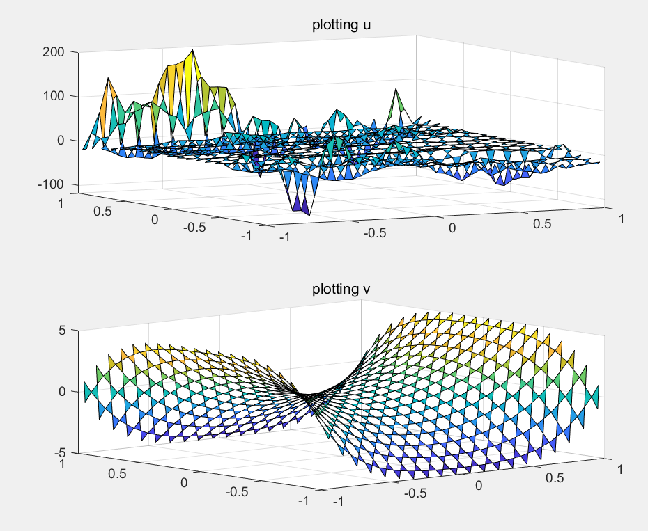
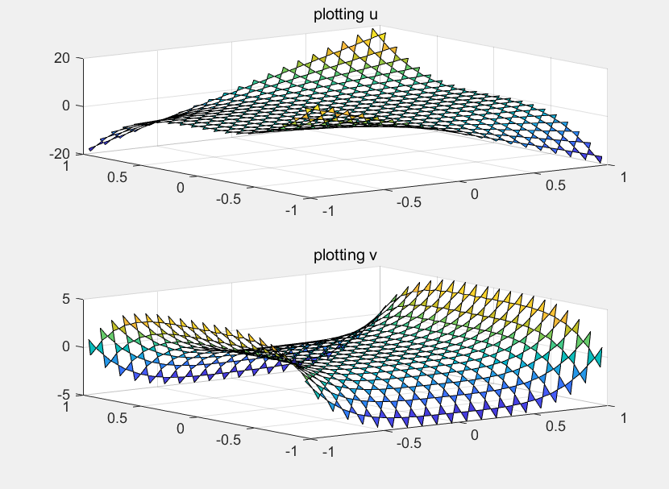

- March 5, 2020

as shown above, the plotting result looks obviously much worse than FDM multi-grid solver due to more complicated geometric structure FEM used, but it's just the very begining step tested result.- Update: March 6, 2020

Yesterday I forgtot to add vertical part of velocity for div u = g on the step of assembling stiffness matrix. So it actually didn't work at that time. Anyway now it works well as FDM although with a bunch of holes, which can be fixed by interpolation through fine grid nodes.